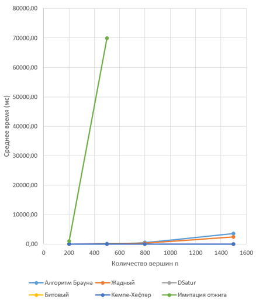

Задача правильной раскраски вершин графа — одна из классических NP-полных задач дискретной математики. Она заключается в присвоении каждой вершине цвета таким образом, чтобы никакие две смежные вершины не имели одинакового цвета. Минимальное количество цветов называется хроматическим числом χ(G). Задача находит применение при составлении расписаний, распределении частот в сетях связи и регистровом распределении.
В работе исследованы девять алгоритмов, разделённых на четыре класса:
Тестирование проводилось на трёх типах графов: полных, двудольных и случайных. Для полных графов потверждено χ = n, для двудольных - χ = 2, что говорит о корректности реализаций алгоритмов в коде. На случайных графах оценивались время работы и качество раскраски(хроматическое число).
На рисунке 1 представлена диаграмма времени выполнения эврестических алгоритмов в зависимости от числа вершин n (плотность рёбер 70%).

На диаграмме видно, что алгоритм имитации отжига резко выделяется по времени (до 70000мс при n=500), тогда как остальные эврестики работают доли миллисекунд.
На основе тестирования алгоритмов были разработаны рекоменации по выбору алгоритма в зависимости от размера графа и приоритета(скорость или точность).
| Случай | Рекомендуемый алгоритм |
|---|---|
| n ≤ 10, нужна точность | Алгоритм ветвей и границ, алгоритм перебора с возвратом |
| n ≤ 10, нужна скорость | Алгоритм DSatur, алгоритм Брауна |
| 10 < n ≤ 30, нужна точность | Алгоритм DSatur, алгоритм Брауна |
| 10 < n ≤ 100, нужна скорость | Жадный алгоритм, битовый алгоритм |
| 10 < n ≤ 100, баланс | Алгоритм DSatur |
| n > 100 | Жадный алгоритм, битовый алгоритм |
| Улучшить жадный результат | Алгоритм Кемпе-Хефтера (после жадного) |
| Много времени, нужно качество | Алгоритм имитации отжига |
В ходе работы реализованы и протестированы девять алгоритмов раскраски графов. Установлено, что точные алгоритмы эффективны лишь при n ≤ 10–20 из-за экспоненциальной сложности. Среди эвристик лучший баланс скорости и качества показывает DSatur: он даёт на 1–2 цвета меньше жадного при приемлемом времени. Для больших графов (n > 100) оптимальны жадный и битовый алгоритмы. Имитация отжига не пригодна для практического использования из-за огромного времени работы. Разработанные рекомендации могут применяться при выборе алгоритма для задач составления расписаний и распределения ресурсов.